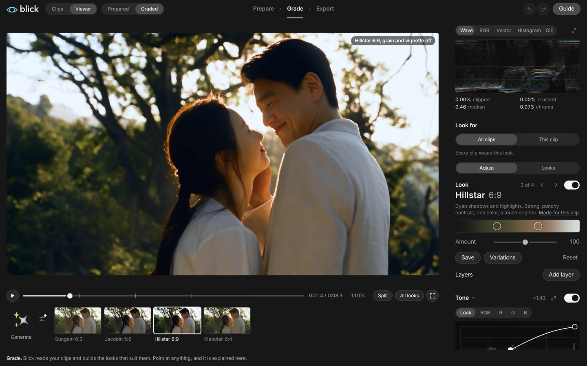
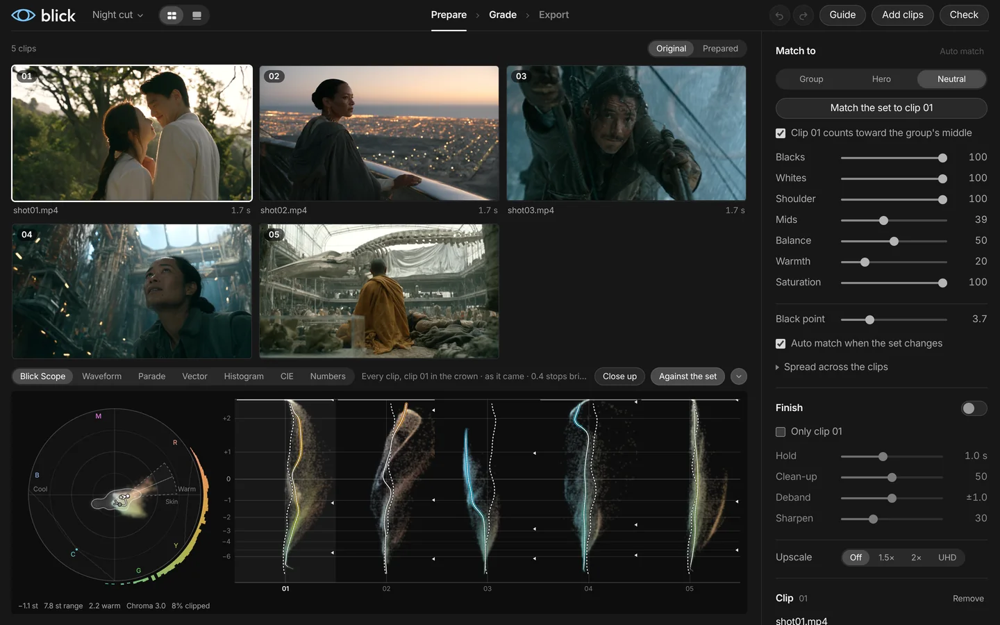
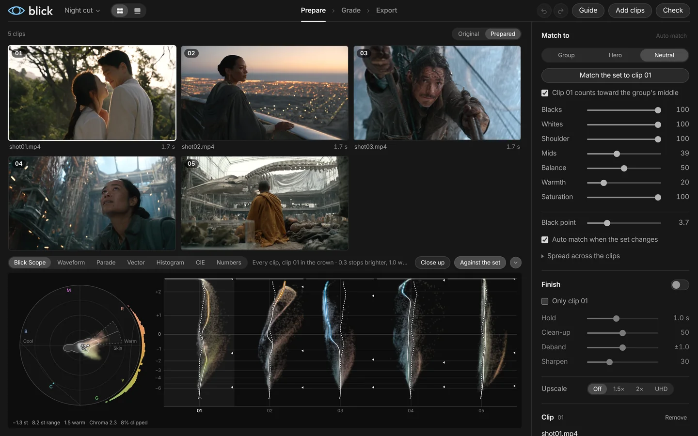

AI color grading
It sees the clip.
Then it grades it.
Press Generate, and Blick writes a finished grade for the clip in front of it: tone, color and film, set for that picture. Then it carries the whole cut with it.
€49 a month or €495 a year. On sale soon.
One cut, as it arrived and as Blick rendered it
Grade
Generate writes
the grade.
Not presets. Generate reads the whole clip, seven frames across it, and writes the grade that clip needs: where its blacks and whites sit, its color, how film would take it. The first press gives the grade that suits the clip best. Press again for another, made for the same picture.
- Checked on the picture
- Each look is solved on the clip itself, then eased if it would clip a highlight, crush a black or move the skin away from where it was.
- All clips, or one
- A look applies to the whole cut. Any clip can wear one of its own, with its own sliders, and go back to the cut's look without losing it.
- Every slider is yours
- Tone with its curves, Color, Hues, Film and Finish, each in a window of its own. What Generate set is where you start, not where you have to stay.
- Grain and Vignette
- Two windows of their own, off until you switch them on: grain by size, roughness, softness and tone, judged in a loupe at full size, and a vignette you place, turn and tint on a small picture of the frame.
- A library, and your own
- Beside the looks Generate makes, the same row holds a library to choose from, and every grade you save, ready in every project.
- Scopes
- Blick Scope, waveform, RGB parade, vectorscope, histogram and a CIE diagram, as many at once as you like. Zoom into any of them, and push the color from Blick Scope itself.

Prepare
And it makes the cut
one film.
Generated clips rarely agree. One sits on milky blacks, the next runs magenta, a third tops out early. Prepare measures every clip and gives each one correction that brings the set together. Its Finish then takes the generated look off the clips that need it: it steadies the level, cleans, debands and sharpens.


- Three ways to match
- Group moves every clip to the middle of the set. Hero moves them to one clip you pick. Neutral keeps the set's own levels and takes the color out of the blacks.
- A finish for the cut
- Hold keeps level and color steady, Clean-up takes out noise and grit, Deband rebuilds smooth ramps, Upscale goes up to UHD, Sharpen lifts the edges.
- Cuts and timelines
- Find cuts splits a file into its shots, and each shot gets its own match. Or bring the sequence from Premiere Pro, DaVinci Resolve or Final Cut Pro.
- Blick Scope
- One scope for color and light, in the picture's own colors: every clip a plume, dark at the foot and light at the top. Clips that match have the same shape at the same height.
Export
Rendered for the edit.
Or taken along as a LUT.
Write new files in the format your edit wants, with the match, the finish and the look in them and the sound carried over. Or leave the files alone and take the look with you as a .cube LUT.
- ProRes
- 422 Proxy, LT, 422 and HQ, 4444 and 4444 XQ
- DNxHR
- SQ, HQ, HQX and 444
- HEVC
- 10-bit, 4:2:0 or 4:2:2, in software, or on the Mac's own chip
- H.264
- 8-bit, for review and delivery
- Lossless
- FFV1 at 10 or 16 bits, and uncompressed 10-bit
- CineForm
- 10-bit 4:2:2
- Image sequences
- DPX at 10 bits, TIFF and PNG at 16
- The look
- A .cube LUT of the grade, without its finish, grain and vignette
Get Blick
On sale soon.
Monthly
€49
a month
Yearly
€495
a year
- Prepare, Grade and Export, as on this page
- Every update for as long as you subscribe
- Free to try for 7 days, exports included
Blick isn't on sale yet. The button opens your mail app, and I'll write to you the day it is.
For a Mac with Apple silicon, on macOS 13 or later.
Questions
Before you ask.
Do I need to know color grading?
No. Generate writes a finished grade for the clip, and the first press gives the one that suits it best. Every slider is there for the day you want to move one.
Can I change a look after Generate has made it?
Yes, all of it. A generated look is a set of sliders and curves like any other grade: move them, switch a window off, or press Generate again for another.
Is it only for AI-generated clips?
It is made for them, but it takes any Rec. 709 clips that should look like one film: stock footage, phone clips, renders.
What does it cost?
€49 a month or €495 a year, with every update for as long as you subscribe. Cancel whenever you like.
Can I try it first?
Yes. Download it and everything works for 7 days, exports included. After that, exporting needs a subscription. Add the key from your receipt in the same app; nothing to reinstall.
What can I open in it?
MP4 and MOV files in H.264, HEVC, ProRes or DNxHR, at 8, 10 or 12 bits. Drop a folder and Blick takes every clip in it, or bring the sequence from your editor.
Can I keep grading in Resolve afterwards?
Yes, two ways. Render ProRes 4444 or a 16-bit sequence and grade on top of it. Or save the look as a LUT and put it on your own files.
Does it change my files?
No. Blick writes new files into a folder you choose and never touches the ones you gave it.
Do my clips leave my computer?
No. Blick reads, matches, grades and renders on your own computer. Nothing is uploaded, so there is no queue and there are no credits to buy.
Which computers does it run on?
Macs with Apple silicon, on macOS 13 or later. A version for Windows is built and being tested.